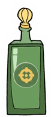

In-Game Description
"Long range with below-average damage. No aiming required."
Regular Attack
The Chaser
The Chaser is a unique weapon in Cuphead because it tracks enemies automatically, allowing the player to focus more on dodging rather than aiming.
However, this comes at the cost of lower damage. The projectiles home in on enemies but take a bit longer to hit.
It’s ideal for bosses that require constant movement but don’t need precise aiming.
Super Attack
The Homing Barrage
The Homing Barrage fires multiple homing missiles that seek out targets across the screen.
These projectiles deal a decent amount of damage, and the barrage covers a wide area, making it a great tool when dealing with multiple threats at once.
The damage output is spread out, but it’s very helpful when you need to keep enemies in check.
Statistics
| Weapon |
Damage |
DPS |
Price |
Fire Delay (Frames) |
| Chaser |
0.75 (per shot) |
18 (All shots hit) |
4 coins |
18 Frames |
| Homing Barrage |
6 (All shots hit) |
36 |
4 coins |
40 Frames |
Summary
The Chaser is a solid weapon for players who want to focus on dodging while still dealing consistent damage.
It works especially well against bosses with erratic movement or in situations where it’s difficult to keep a steady aim.
For example, during the fight with King Dice, the Chaser can help in hitting him without needing precise control, as you focus more on dodging his attacks.
Although it’s not as powerful as some other weapons, its homing ability makes it very effective in certain circumstances.
Home